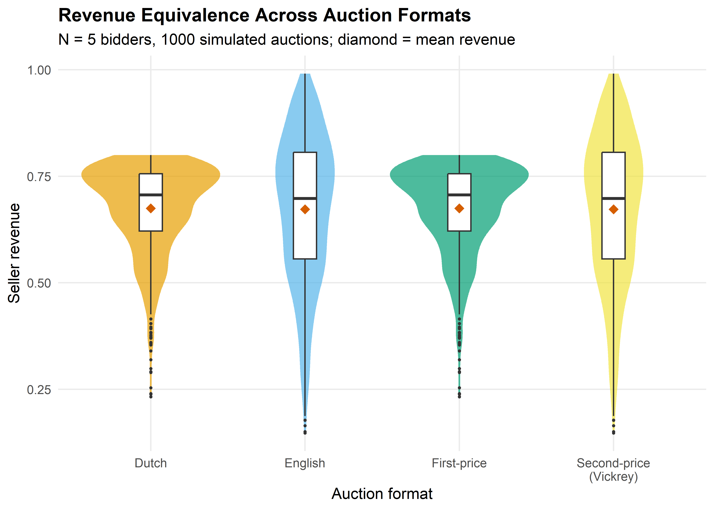
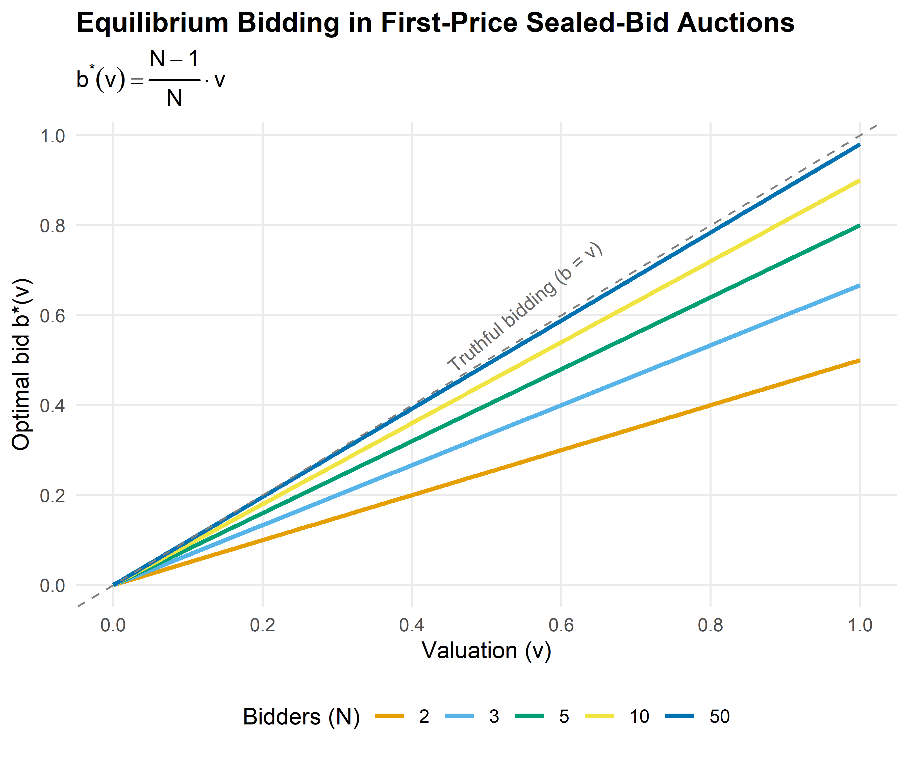

simulate_auctions <- function(n_auctions, n_bidders) {
# Generate valuation matrix: rows = auctions, cols = bidders
valuations <- matrix(runif(n_auctions * n_bidders),
nrow = n_auctions, ncol = n_bidders)
# First-price: equilibrium bid = (N-1)/N * v
bids_fp <- valuations * (n_bidders - 1) / n_bidders
winner_fp <- apply(bids_fp, 1, which.max)
revenue_fp <- apply(bids_fp, 1, max)
# Second-price (Vickrey): truthful bidding, pay second-highest
revenue_sp <- apply(valuations, 1, function(v) sort(v, decreasing = TRUE)[2])
# English: strategically equivalent to second-price
revenue_en <- revenue_sp
# Dutch: strategically equivalent to first-price
revenue_du <- revenue_fp
tibble(
auction_id = rep(seq_len(n_auctions), 4),
format = rep(c("First-price", "Second-price\n(Vickrey)",
"English", "Dutch"),
each = n_auctions),
revenue = c(revenue_fp, revenue_sp, revenue_en, revenue_du)
)
}33 Auction Theory
Abstract
Game-theoretic analysis of auctions: first-price, second-price (Vickrey), English, and Dutch formats, revenue equivalence, optimal bidding strategies, and R simulations.
Keywords
auctions, revenue equivalence, Vickrey, first-price, optimal bidding
34 Auction Theory
Learning objectives
- Distinguish first-price, second-price (Vickrey), English, and Dutch auction formats and their strategic equivalences.
- State the revenue equivalence theorem and its assumptions.
- Derive the equilibrium bidding strategy in a first-price sealed-bid auction with uniformly distributed valuations.
- Simulate auctions with \(N\) bidders in R and compare expected revenues across formats.
34.1 Motivation
Auctions allocate billions of dollars in goods each year — from government spectrum licenses and treasury bonds to online advertising slots and fine art. The choice of auction format has profound consequences for both seller revenue and allocative efficiency. In 2020, the FCC raised over $80 billion through spectrum auctions, while platforms like Google run billions of ad auctions daily.
A natural question arises: does the auction format matter? Should a seller prefer a first-price or second-price auction? The revenue equivalence theorem gives a striking answer — under standard assumptions, all four major formats yield the same expected revenue. Understanding when this result holds, and when it breaks down, is essential for practical auction design (Myerson, 1991).
34.2 Theory
34.2.1 Auction formats
We consider four canonical single-item auction formats with \(N\) bidders, each having a private valuation \(v_i\) drawn independently from a common distribution \(F\) on \([0, 1]\).
First-price sealed-bid. Each bidder submits a sealed bid. The highest bidder wins and pays their bid. Bidders shade their bids below their valuations to earn positive surplus.
Second-price sealed-bid (Vickrey). Each bidder submits a sealed bid. The highest bidder wins but pays the second-highest bid. Truthful bidding (\(b_i = v_i\)) is a weakly dominant strategy.
English (ascending). The price rises continuously; bidders drop out when the price exceeds their valuation. The last remaining bidder wins at the price where the second-to-last bidder dropped out. Strategically equivalent to the Vickrey auction.
Dutch (descending). The price starts high and falls. The first bidder to accept the current price wins and pays that price. Strategically equivalent to the first-price sealed-bid auction.
34.2.2 Dominant strategy in second-price auctions
Proposition: Truthful Bidding in Vickrey Auctions
In a second-price sealed-bid auction, bidding \(b_i = v_i\) (truthfully) is a weakly dominant strategy for every bidder.
The intuition is straightforward. Bidding above your valuation risks winning at a price you cannot afford; bidding below your valuation risks losing an auction you would have profited from. Since the winner pays the second-highest bid, your bid affects only whether you win, not what you pay — so truthful bidding is optimal regardless of others’ strategies.
34.2.3 Optimal bidding in first-price auctions
In a first-price auction, bidding truthfully guarantees zero profit. Bidders must therefore shade their bids. To derive the equilibrium, suppose all bidders follow an increasing strategy \(b(v)\). Bidder \(i\) with valuation \(v_i\) wins if all others have lower valuations. With \(v_j \sim \text{Uniform}(0, 1)\), the probability of winning with bid \(b\) is \(F(b^{-1}(b))^{N-1} = (b^{-1}(b))^{N-1}\).
Maximizing expected payoff \((v_i - b) \cdot \Pr(\text{win})\) and imposing the boundary condition \(b(0) = 0\) yields the symmetric Bayesian Nash equilibrium:
\[ b^*(v) = \frac{N - 1}{N} \cdot v \tag{34.1}\]
Each bidder shades their bid by a factor of \(1/N\). As \(N \to \infty\), bids converge to valuations — competition eliminates the bidder’s surplus. With \(N = 2\), bidders bid half their valuation; with \(N = 10\), they bid 90% of their valuation.
34.2.4 Winner’s expected payment
Under both formats, the expected revenue equals the expected second-highest order statistic. For \(N\) bidders with \(v_i \sim \text{Uniform}(0, 1)\), the expected value of the \(k\)-th order statistic is \(k/(N+1)\), so:
\[ \mathbb{E}[\text{revenue}] = \mathbb{E}[v_{(N-1)}] = \frac{N - 1}{N + 1} \tag{34.2}\]
For example, with \(N = 5\) bidders, the expected revenue is \(4/6 \approx 0.667\).
34.2.5 Revenue equivalence theorem
Theorem: Revenue Equivalence
Suppose \(N\) risk-neutral bidders have valuations drawn independently from the same continuous distribution. Then any auction mechanism that (i) allocates the item to the bidder with the highest valuation and (ii) gives zero expected surplus to a bidder with the lowest possible valuation yields the same expected revenue to the seller.
Under these conditions, the expected revenue in all four standard formats equals the expected value of the second-highest order statistic. For \(v_i \sim \text{Uniform}(0, 1)\), this is \((N-1)/(N+1)\) (Nisan et al., 2007, 9).
34.3 Implementation in R
34.3.1 Auction simulation functions
34.3.2 Figure 1: Revenue comparison across auction types
set.seed(42)
revenue_data <- simulate_auctions(n_auctions = 1000, n_bidders = 5)
# Compute means for annotation
revenue_means <- revenue_data |>
group_by(format) |>
summarise(mean_rev = mean(revenue), .groups = "drop")
p_revenue <- ggplot(revenue_data, aes(x = format, y = revenue, fill = format)) +
geom_violin(alpha = 0.7, colour = NA) +
geom_boxplot(width = 0.15, fill = "white", outlier.size = 0.5) +
geom_point(data = revenue_means, aes(x = format, y = mean_rev),
shape = 18, size = 3, colour = okabe_ito[6], inherit.aes = FALSE) +
scale_fill_manual(values = okabe_ito[1:4]) +
scale_y_continuous(name = "Seller revenue", labels = label_number(accuracy = 0.01)) +
labs(x = "Auction format",
title = "Revenue Equivalence Across Auction Formats",
subtitle = glue("N = 5 bidders, 1000 simulated auctions; ",
"diamond = mean revenue")) +
theme_publication() +
theme(legend.position = "none")
p_revenue
save_pub_fig(p_revenue, "auction-revenue-comparison", width = 7, height = 5)
34.3.3 Figure 2: Optimal bid function in first-price auction
bid_curves <- map_dfr(c(2, 3, 5, 10, 50), function(n) {
tibble(
valuation = seq(0, 1, length.out = 200),
bid = valuation * (n - 1) / n,
N = factor(n)
)
})
p_bid <- ggplot(bid_curves, aes(x = valuation, y = bid, colour = N)) +
geom_line(linewidth = 1) +
geom_abline(slope = 1, intercept = 0, linetype = "dashed", colour = "grey50") +
annotate("text", x = 0.55, y = 0.62, label = "Truthful bidding (b = v)",
colour = "grey40", size = 3.2, angle = 40) +
scale_colour_manual(values = okabe_ito[1:5],
name = "Bidders (N)") +
scale_x_continuous(name = "Valuation (v)", breaks = seq(0, 1, 0.2)) +
scale_y_continuous(name = "Optimal bid b*(v)", breaks = seq(0, 1, 0.2)) +
labs(title = "Equilibrium Bidding in First-Price Sealed-Bid Auctions",
subtitle = expression(b^"*"*(v) == frac(N - 1, N) %.% v)) +
theme_publication()
p_bid
save_pub_fig(p_bid, "auction-bid-function", width = 6, height = 5)
34.4 Worked example
We simulate 1000 first-price sealed-bid auctions with 5 bidders and compare the revenue to 1000 Vickrey auctions. If revenue equivalence holds, the mean revenues should be close.
set.seed(123)
n_sim <- 1000
n_bid <- 5
# Generate valuations (shared across formats for paired comparison)
vals <- matrix(runif(n_sim * n_bid), nrow = n_sim, ncol = n_bid)
# First-price: equilibrium bids
bids_fp <- vals * (n_bid - 1) / n_bid
rev_fp <- apply(bids_fp, 1, max)
# Vickrey: truthful bidding, pay second-highest
rev_vickrey <- apply(vals, 1, function(v) sort(v, decreasing = TRUE)[2])
# Theoretical expected revenue: (N-1)/(N+1) for Uniform(0,1)
theoretical <- (n_bid - 1) / (n_bid + 1)
cat("First-price auctions:\n")#> First-price auctions:cat(sprintf(" Mean revenue: %.4f\n", mean(rev_fp)))#> Mean revenue: 0.6624cat(sprintf(" Std. deviation: %.4f\n", sd(rev_fp)))#> Std. deviation: 0.1150cat(sprintf("\nVickrey auctions:\n"))#>
#> Vickrey auctions:cat(sprintf(" Mean revenue: %.4f\n", mean(rev_vickrey)))#> Mean revenue: 0.6680cat(sprintf(" Std. deviation: %.4f\n", sd(rev_vickrey)))#> Std. deviation: 0.1762cat(sprintf("\nTheoretical E[revenue] = (N-1)/(N+1) = %.4f\n", theoretical))#>
#> Theoretical E[revenue] = (N-1)/(N+1) = 0.6667cat(sprintf("\nDifference in means: %.4f\n", mean(rev_fp) - mean(rev_vickrey)))#>
#> Difference in means: -0.0056# Paired t-test (auctions use same valuations)
t_result <- t.test(rev_fp, rev_vickrey, paired = TRUE)
cat(sprintf("Paired t-test p-value: %.4f\n", t_result$p.value))#> Paired t-test p-value: 0.1789cat("Conclusion:", ifelse(t_result$p.value > 0.05,
"No significant difference -- revenue equivalence holds.",
"Significant difference detected."), "\n")#> Conclusion: No significant difference -- revenue equivalence holds.Both formats produce mean revenues close to the theoretical value of \((N-1)/(N+1) = 4/6 \approx 0.667\). The paired \(t\)-test confirms no statistically significant difference, consistent with the revenue equivalence theorem. Note that while expected revenues are equal, individual auction revenues differ — in the first-price format, revenue variance is typically lower because the winner pays a bid that is already close to the second-highest valuation.
34.5 Extensions
Revenue equivalence breaks down when its assumptions are violated, opening the door to richer auction design:
- Risk-averse bidders bid more aggressively in first-price auctions to reduce the risk of losing, giving the seller higher expected revenue than under the Vickrey format.
- Common-value auctions introduce the winner’s curse: the winner has the most optimistic estimate, leading to overbidding. Bidders must shade bids further to avoid overpaying.
- Optimal auction design (Chapter 35) uses Myerson’s framework to design revenue-maximizing mechanisms, including reserve prices that screen out low-value bidders.
- Multi-unit auctions generalize to settings where multiple identical items are sold simultaneously, using uniform-price or discriminatory formats.
- Asymmetric bidders with valuations drawn from different distributions break revenue equivalence and make equilibrium computation substantially harder.
For a comprehensive treatment of auction theory, see Myerson (1991) (Chapter 8) and Nisan et al. (2007) (Chapters 9–11).
Exercises
Reserve prices. Modify the
simulate_auctions()function to include a reserve price \(r = 0.3\). If no bid exceeds \(r\), the item is unsold (revenue = 0). Run 1000 simulations with \(N = 3\) bidders and compare mean revenue to the case without a reserve price. Does a reserve price increase expected revenue? Explain why using the theory of optimal auctions.All-pay auction. In an all-pay auction, every bidder pays their bid but only the highest bidder wins. With \(N\) bidders and \(v_i \sim \text{Uniform}(0, 1)\), the symmetric equilibrium strategy is \(b^*(v) = \frac{N-1}{N} v^N\). Implement a simulation of the all-pay auction and verify that the revenue equivalence theorem holds by comparing mean revenue to the first-price and Vickrey formats.
Number of bidders. Using the simulation framework from this chapter, plot expected seller revenue as a function of the number of bidders \(N \in \{2, 3, 5, 10, 20, 50\}\) for both first-price and Vickrey auctions. Overlay the theoretical curve \((N-1)/(N+1)\). What happens as \(N \to \infty\)?
Solutions appear in Appendix E.
Myerson, R. B. (1991). Game theory: Analysis of conflict. Harvard University Press.
Nisan, N., Roughgarden, T., Tardos, É., & Vazirani, V. V. (2007). Algorithmic game theory. Cambridge University Press.